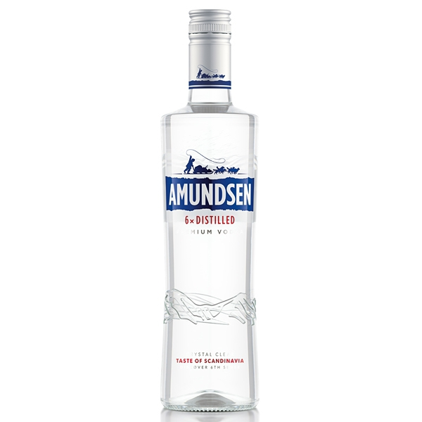

Automatický optický odečet
Skener hledá hladinu a rozlišuje stav hrdla. Pro tvarované lahve potřebuje kalibrační křivku. Nejasný snímek vyžaduje kontrolu.
Skenování lahví pro barovou inventuru
Průhlednou lahev změří skener podle hladiny. U neprůhledné lahve vypočítáte zůstatek z váhy a uložené kalibrace.

Rozpoznaná hladinaUkázka měření
Fotoanalýza určuje hladinu a zkouší rozlišit víčko, nalévátko nebo otevřené hrdlo. Je dostupná po aktivaci a její přesnost na skutečných lahvích zatím není ověřená.
Objem lahve · 700 ml
Připravený ukázkový snímek.
Specifikace skeneru
Cílem je automatické měření známých lahví a postupné rozšiřování ověřených profilů.
Skener hledá hladinu a rozlišuje stav hrdla. Pro tvarované lahve potřebuje kalibrační křivku. Nejasný snímek vyžaduje kontrolu.
Plnou a prázdnou váhu lze uložit ke konkrétní lahvi. Při dalším měření stačí aktuální váha se stejným uzávěrem.
Ověřené opravy a kalibrace mají tvořit centrální verzované profily. Fotky a inventury jednotlivých provozů zůstávají soukromé.
Jeden den v baru
Každý pohyb zásob má v Noire svůj záznam. Tým ví, co přišlo, co se přesunulo a co v lahvích skutečně zůstalo.
Před otevřením
Zapište přijaté zboží do skladu a dohledávejte ho v historii dodávek.
Během směny
Zaznamenejte přesun lahví ze skladu na bar a mějte přehled, kde jsou.
Po zavření
Otevřené lahve zapište ručně nebo použijte vážení s kalibrací pro konkrétní lahev.
Přístup do aplikace
Skener si můžete vyzkoušet zdarma. Pro přístup k inventurám, skladu a správě provozu si vyberte jednu z placených možností.
2 499 Kč / měsíc
Pravidelný přístup k aplikaci NOIRA.
Poptat měsíční paušál39 999 Kč jednorázově
Objednávka instalace pro váš podnik.
Poptat instalaciTlačítka otevřou předvyplněný e-mail. Platební brána se připravuje.